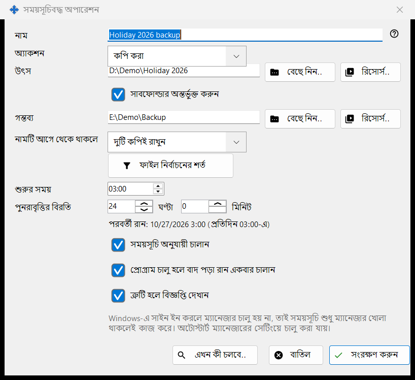
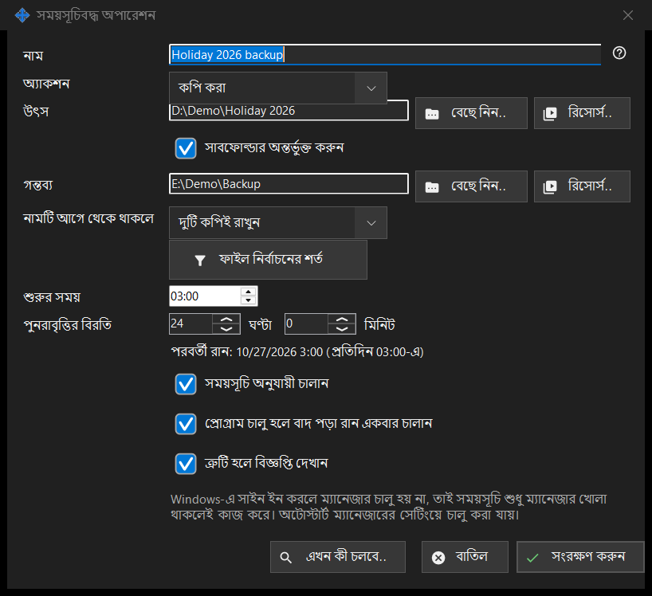

সময়সূচিবদ্ধ অপারেশন
এটি কীসের জন্য
একটি সময়সূচিবদ্ধ ফাইল অপারেশন সম্পাদনা করে: পুনরাবৃত্ত সময়সূচিতে কোনো উৎস থেকে গন্তব্যে ফাইল কপি করা, সরানো, মুছে ফেলা বা আর্কাইভ করা। সময়সূচিবদ্ধ ফাইল অপারেশন Share Manager-এর সঙ্গেই ইনস্টল হয় - একটিই প্যাকেজ, আলাদা ডাউনলোড ছাড়া এবং Windows সেবা ছাড়া - এবং Share Manager আপনার সাইন-ইন সেশনে চলা পর্যন্ত চলে। এর জন্য ফোল্ডার শেয়ারিং, সার্ভার, খোলা পোর্ট বা অ্যাডমিনিস্ট্রেটর অধিকার লাগে না। এই উইন্ডোটি নির্ধারিত অপারেশন উইন্ডোর এবং Share Manager সেটিংসের সময়সূচিবদ্ধ ফাইল অপারেশন পৃষ্ঠার নতুন.. বা সম্পাদনা করুন.. থেকে খোলে, এবং ভিউয়ারের ফোল্ডার মেনুর এই ফোল্ডারের জন্য একটি অপারেশন নির্ধারণ করুন.. আইটেম থেকেও, যা ওই ফোল্ডারকে উৎস হিসেবে বসিয়ে দেয়।


এই ক্রমে
- নাম লিখুন এবং অ্যাকশন বেছে নিন।
- বেছে নিন.., রিসোর্স.. বা Google Drive-এর মাধ্যমে দিয়ে উৎস ঠিক করুন, আর কপি, সরানো ও আর্কাইভের জন্য গন্তব্যও।
- কপি ও সরানোর জন্য নামটি আগে থেকে থাকলে কী হবে তা বেছে নিন।
- ফাইল সীমিত করতে ফাইল নির্বাচনের শর্ত খুলুন।
- শুরুর সময় ও পুনরাবৃত্তির বিরতি ঠিক করুন এবং সময়সূচি অনুযায়ী চালান-এ টিক রাখুন।
- এখন কী চলবে.. দেখে নিন এবং সংরক্ষণ করুন চাপুন।
উপাদানসমূহ
শুরু করা
নির্ধারিত অপারেশন উইন্ডো খুলুন Share Manager-এর ট্রে মেনু থেকে, ভিউয়ারের ফোল্ডার মেনুর নির্ধারিত অপারেশন.. আইটেম থেকে (এটি প্রতিটি ফাইল তালিকায় থাকে), অথবা ভিউয়ারের শর্টকাট সেটিংসে ভিউয়ার কমান্ড নির্ধারিত অপারেশন-এ আপনি যে কী দেবেন তা দিয়ে; ডিফল্টভাবে এর কোনো কী নেই। একই তালিকা Share Manager সেটিংসের সময়সূচিবদ্ধ ফাইল অপারেশন পৃষ্ঠায়ও আছে; আলাদা উইন্ডোতে খুলুন.. লিঙ্কটি সেটিকে নিজস্ব উইন্ডোতে খোলে। একটি নিরাপদ প্রথম অপারেশন: নতুন.. চাপুন, কপি বেছে নিন, কয়েকটি পরীক্ষামূলক ফাইলসহ একটি ফোল্ডার উৎস এবং একটি ফাঁকা ফোল্ডার গন্তব্য হিসেবে নিন, পুনরাবৃত্তির বিরতি ঠিক করুন, সময়সূচি অনুযায়ী চালান-এ টিক রাখুন, এখন কী চলবে.. দেখুন (এটি ফাইলের তালিকা দেখায়, কিছু বদলায় না) এবং সংরক্ষণ করুন চাপুন। অপারেশন কেবল তখনই চলে যখন নির্ধারিত অপারেশন উইন্ডোতে এই কম্পিউটারে সময়সূচি অনুযায়ী অপারেশন চালান-এ টিক দেওয়া থাকে; টিক তুলে দিলে সব সময়সূচি থেমে যায়, আর এখনই চালান হাতে চালানোর জন্য থাকে। Share Manager চালু থাকা দরকার: অটোস্টার্ট সেটিং খুলুন লিঙ্কটি Windows সাইন-ইনে এর শুরুতে নিয়ে যায়। পিসি স্লিপে থাকলে বা Share Manager বন্ধ থাকলে কিছুই চলে না; পরের বার Share Manager চালু হলে বাদ পড়া রান একবার চলে, যদি প্রোগ্রাম চালু হলে বাদ পড়া রান একবার চালান-এ টিক দেওয়া থাকে। ইতিহাস.. প্রতিটি রান দেখায়।
অ্যাকশন ও নামের দ্বন্দ্ব
অ্যাকশন হলো কপি করা, সরানো, মুছে ফেলা বা আর্কাইভ করা, এবং উইন্ডো শুধু সেই অ্যাকশনের দরকারি সারিগুলো দেখায়: মুছে ফেলায় গন্তব্য নেই; নামটি আগে থেকে থাকলে (বাদ দিন, ওভাররাইট করুন, দুটি কপিই রাখুন) শুধু কপি করা ও সরানোয় দেখা যায়; আর্কাইভ যাচাইয়ের পর মূল ফাইলগুলো মুছুন শুধু আর্কাইভ করায় দেখা যায় এবং আর্কাইভ আবার পড়ে যাচাই করার পরই মূল ফাইল সরায়।
উৎস ও গন্তব্য
পূর্ণ পথ লিখুন বা বেছে নিন.. চাপুন। রিসোর্স.. ভিউয়ারের রিসোর্স তালিকা থেকে একটি SFTP সার্ভার বা নেটওয়ার্ক ফোল্ডার বাছে, এবং আর্কাইভের জন্য দেওয়া হয় না, যা শুধু সাধারণ ফোল্ডার ও Google Drive নেয়। Google Drive-এর মাধ্যমে তখনই দেখা যায় যখন আপনি Drive-এ সাইন ইন করা আছেন বা ওই পক্ষ আগে থেকেই সেটি ব্যবহার করছে। সাবফোল্ডার অন্তর্ভুক্ত করুন বন্ধ থাকলে শুধু উৎস ফোল্ডারের নিজের ফাইলগুলো প্রক্রিয়া হয়। সংরক্ষণ করুন সিস্টেম ও প্রোগ্রাম ফোল্ডার এবং উৎসের সমান বা তার ভেতরের গন্তব্য প্রত্যাখ্যান করে, আর কী ভুল তা জানায়।
Google Drive-এর মাধ্যমে
Google Drive-এর মাধ্যমে একটি ছোট উইন্ডো খোলে, যা বলে এই পক্ষের অর্থ কী। উৎস হিসেবে এটি দেয় অন্য ডিভাইস এই পিসিতে যা পাঠায় এবং আপনার অন্য ডিভাইসগুলোর প্রকাশিত ফোল্ডার; গন্তব্য হিসেবে আমার যেকোনো ডিভাইস এবং নাম ধরে আপনার প্রতিটি ডিভাইস। গন্তব্যের ফাইল প্যাকেটে আপনার নিজের Google Drive হয়ে যায় এবং ডিভাইস নিলে তার কাছে পৌঁছায়; সাবফোল্ডার রাখা হয় না। উৎসের ফাইল এই পিসির একটি অস্থায়ী ফোল্ডারে আসে এবং মূল নামে, সাবফোল্ডার ছাড়া, গন্তব্যে পৌঁছায়। প্যাকেট আপনার Google Drive থেকে তখনই সরে, যখন তার সব ফাইল গন্তব্যে পৌঁছে যায়, আর সরানো মূল ফাইল তখনই মুছে ফেলে, যখন তার প্যাকেট আপনার Google Drive-এ থাকে। কোনো ডিভাইসের ফোল্ডার থেকে একটি রান শুধু সেটুকু নেয় যা শেষ সম্পূর্ণ রানের পরে বদলেছে। কেবল একটি পক্ষ Google Drive ব্যবহার করতে পারে; Google Drive-এর মাধ্যমে উৎসের জন্য সংরক্ষণ করুন মুছে ফেলা এবং ফাইলের বয়সের শর্ত প্রত্যাখ্যান করে, আর এখন কী চলবে.. জানায় যে Google Drive-এর মাধ্যমে কী আসবে তা রানের সময়ই জানা যায়। Google Drive উত্তর না দিলে রানটি বাদ যায় এবং পরেরটি আবার চেষ্টা করে। Google Drive-এ জায়গা না থাকা, সাইন ইন হারানো বা ডিভাইসের প্রত্যাখ্যান রান থামিয়ে দেয়, আর ইতিহাস কারণ জানায়।
ফাইল মুছে ফেলা
ফাইল সরানো হবে এমন হলে (মুছে ফেলা, বা মূল ফাইল সরানোর বিকল্পসহ আর্কাইভ), মুছে ফেলা: .. লাইনটি জানায় সেগুলো কোথায় যায়: রিসাইকেল বিনে, অথবা কারণসহ স্থায়ীভাবে, যেমন নেটওয়ার্ক বা রিমুভেবল ডিস্কে রিসাইকেল বিন নেই। এমন অপারেশনে Enter সংরক্ষণ করে না; ইচ্ছা করে সংরক্ষণ করুন চাপুন। সময়সূচির রান কখনো প্রশ্ন করে না এবং মুছে ফেলা ফাইলগুলো কোথায় গেল তা লিখে রাখে।
ফাইল নির্বাচনের শর্ত
শর্ত ডিফল্ট থেকে আলাদা হলে প্যানেলটি নিজে থেকে খোলে। ফাইলের ধরন: সব ফাইল, ছবি, অডিও, ভিডিও, নথি (সব ফাইল বাকি চারটিকে বন্ধ করে)। পরিবর্তনের সময়: সম্পূর্ণ সময়কাল, শেষ রানের পর থেকে নতুন, গত এক ঘণ্টা, গত এক দিন। নামের মাস্ক এবং মাস্ক অনুযায়ী বাদ দিন-এ সেমিকোলন দিয়ে আলাদা করা একাধিক মাস্ক দেওয়া যায়, যেমন *.jpg;IMG_??.png, যা ফাইলের নামের সঙ্গে মেলানো হয়। এর চেয়ে পুরনো ও এর চেয়ে নতুন দিন ও ঘণ্টায়, এর চেয়ে বড় ও এর চেয়ে ছোট MB-তে। লুকানো ও সিস্টেম ফাইল অন্তর্ভুক্ত করুন ডিফল্টভাবে বন্ধ থাকে।
সময়সূচি
শুরুর সময় দিনের সময় ঠিক করে, আর পুনরাবৃত্তির বিরতি ঘণ্টা ও মিনিটে ব্যবধান ঠিক করে; পূর্ণসংখ্যক দিন একই সময়ে পুনরাবৃত্ত হয়। তাদের নিচের লাইনে পরবর্তী রান: সময় (নিয়ম) অথবা সময়সূচি বন্ধ: অপারেশন শুধু হাতে চালানো যায়। লেখা থাকে। প্রোগ্রাম চালু হলে বাদ পড়া রান একবার চালান এবং ত্রুটি হলে বিজ্ঞপ্তি দেখান আলাদা পছন্দ। আরেকটি লাইন জানায় যে সময়সূচি কেবল Share Manager চলার সময় কাজ করে, এবং সেটি Windows সাইন-ইনে শুরু হয় কি না; এই উইন্ডোতে কিছুই স্বয়ংক্রিয় চালু বদলায় না।
পূর্বদর্শন ও সংরক্ষণ
এখন কী চলবে.. অপারেশন যে ফাইলগুলো প্রক্রিয়া করবে তার তালিকা দেখায় এবং কিছু বদলায় না; রানের জন্য এটি লাগে না। সংরক্ষণ করুন অপারেশনটি সংরক্ষণ করে, অথবা কী ঠিক করতে হবে তার তালিকা দেয়। বাতিল আপনার সম্পাদনা বাদ দেয়।
ম্যানেজার সেটিংস · SFTP শেয়ারিং সেটিংস · এক্সচেঞ্জ সার্ভার সেটিংস